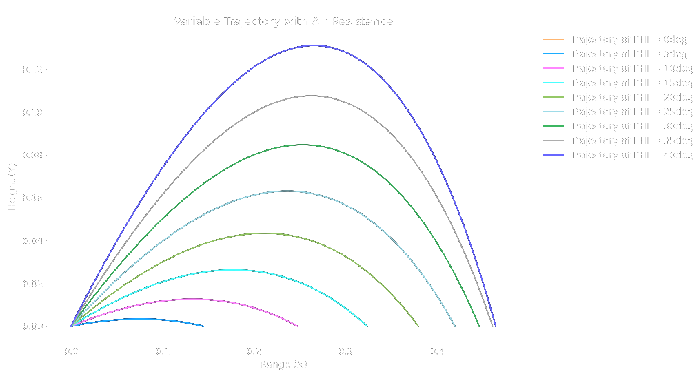

Football Trajectory Simulation
Project Description
This project was a dynamical analysis of a football in flight being subjected to non-moving air resistance. The principle questions this study aimed at answering were:
- The generalized relationship between the launch angle and the range of the football
- The optimal angle to throw the football to maximize the above range.
- Whether an accurate simulation could be created such that a runner could be coordinated to recieve the football within a given timespan.
Methods
The dynamics were solved for using dimensionless variables for the position of the ball as well as a combined drag coefficient to create a system of ordinary differential equations. An intrinsic coordinate system was applied in order to impose the condition that the aerodynamic drag acts tangential to the trajectory of the football. Note that the constants kappa and alpha are approximated for this application.
Using dimensionless variables simplified the analysis to just a system of two equations--note that the equations to the left can be written in terms of just the instantaneous velocity and directional angle to allow Euler's method to be used to solve for the position across the runtime of the simulation. A python script was written to solve this system using the fourth order Runge-Kutta method which can produce trajectory plots as well as iterate to find the optimal launch angle.
Results
Based on the objectives of this project defined by the project scope, the simulation created was used to plot the trajectory of the football to determine the overall path and compare it to the ideal parabolic shape, determine the optimal launch angle to use, and determine the relationship between the runner speed and the launch angle.
Optimal Launch Angle
Based on the above plot, a launch angle of 39.05 degrees is ideal for maximum range, around 6 degrees less than the ideal angle in the no air resistance case. The maximum range can also be determined using the dimensionless variables which for an NFL quarterback throwing 60 mph, a range of just 37.2 yards is expected meaning much less air resistance is achieved in actual applications due to ball rotation--this almost doubles the non-spinning range expected.
Runner Control
With varying launch angles, the required runner speed can be plotted for the range of angles shown above. This means that for a ball thrown at 65 degrees +/- 3 degrees due to innaccuracies of the quarterback, the runner will have to run 12-15 mph to catch this ball which is realistically achievable. This analysis can be used to create an automated controller to predict the speed required to meet the ball based on the aforementioned dynamics, then adjust according to this simplified plant equation.